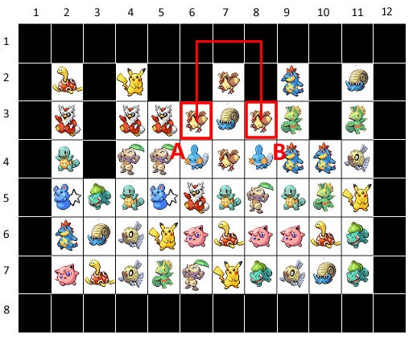

Trong trò chơi Pikachu, để có thể ăn được 2 tấm hình giống nhau, thì cần tồn tại một đường đi từ hình này đến hình kia mà chỉ đổi hướng tối đa 2 lần (xem hình bên dưới).

Cho một trạng thái của trò chơi Pikachu là ma trận gồm n dòng m cột và vị trí của hai tấm hình giống nhau. Bạn hãy xác định xem từ tấm hình này đế tấm hình kia tối thiểu phải đổi hướng mấy lần nhé.
Dữ liệu nhập: gồm các dòng sau:
- Dòng thứ nhất là hai số nguyên n, m cách nhau một khoảng trắng (1 ≤ n, m ≤ 100) là số dòng và số cột của trò chơi.
- Trong n dòng tiếp theo, tại mỗi dòng gồm m số nguyên 0 hoặc 1 cách nhau một khoảng trắng thể hiện trạng thái của trò chơi, 0 là ô không có thẻ hình, 1 là ô có thẻ hình.
- Trong dòng tiếp theo gồm 4 số nguyên y1, x1, y2, x2 (1 ≤ y1, y2 ≤ n, 1 ≤ x1, x2 ≤ m) mỗi số cách nhau một khoảng trắng. (y1, x1) là vị trí dòng và vị trí cột của hình thứ nhất, (y2, x2) là vị trí dòng và vị trí cột của hình thứ hai. Dữ liệu cho đảm bảo hai ô trên không trùng nhau và tại hai ô đều có thẻ hình.
Dữ liệu xuất:
- Nếu tồn tại đường đi giữa 2 thẻ hình, in ra số lần chuyển hướng của đường đi có số lần chuyển hướng ít nhất.
- Nếu không tồn tại đường đi, in ra -1.
Lưu ý: đánh số các dòng từ 1 đến n theo thứ tự từ trên xuống dưới, đánh số các cột từ 1 đến m theo thứ tự từ trái qua phải.